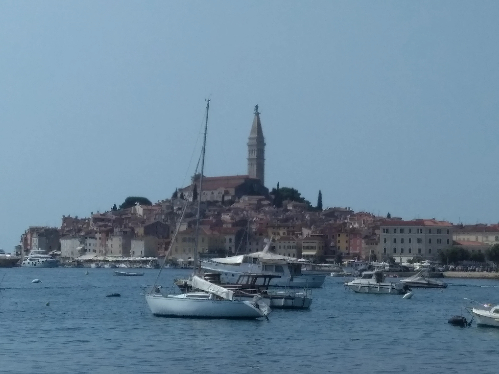

Solo travelling during the covid era was not easy at all. Having to deal with the huge amount of restrictions that every country had was very hard, but staying home the whole summer would have been even harder. Istria was a part of Europe so close to my native country in terms of language, culture and proximity and I never had the chance to visit it therefore I set it as my destination. I always had a strong interest towards the Republic of Venice as a civilization (697AD - 1797AD). They made their fortune mostly on trade, being basically on the sea and saw the Roman power mostly as an enemy rather then an ally. Marco Polo was born there (I definitely want to read his biography one day) as well as Vivaldi.
Back to my journey, I was very much impressed by Pula roman architecture, in particular the Arena, one of the six largest surviving Roman arenas in the world. I was located a bit outside of the center, and it took me a good half an hour walking each day to get back into town. Walking must always be seen a pleasure for every human being and something that has never to be taken for granted. Rovigno and Fiume were other stops on my journey.
For this trip I decided to bring along the bravery of "Papá Hemingway" in his volunteering journey in the north of Italy during WWI and his tales of love and death in my native Italy. Writing daily can be seen as a way to keep danger away and to remark at the end of the day, especially during a war, that "hey! I am still alive" (A Farewell to Arms, 1929).